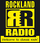

Stationen
Hinweis:
Da diese Liste nie vollständig sein wird, kann jeder angemeldete Benutzer hier die eigenen Lieblingsstation(en) hinzufügen. Bitte alphabetisch einsortieren und nur Sender eintragen, welche ihre Frequenzen auf der Homepage hinterlegt haben. Einzelsender sind bei den Sendeanstalten, zu denen sie gehören, einzutragen. So ist z.B. N-JOY unter NDR und 1live unter WDR zu finden.
Alle anderen - in der Regel reine Webradios - gehören in den Artikel Internetradio/Internetradio-Stationen!
- Radiosender Australien
- Radiosender Curacao
- Radiosender Deutschland
- Radiosender Dominikanische Republik
- Radiosender England
- Radiosender Finnland
- Radiosender Frankreich
- Radiosender Italien
- Radiosender Irland
- Radiosender Kanada
- Radiosender Lettland
- Radiosender Niederlande
- Radiosender Österreich
- Radiosender Schweden
- Radiosender Schweiz
- Radiosender Spanien
- Radiosender Tschechien
- Radiosender USA
- Links
Viele Radiosender stellen ihre Sendungen auch live im Internet zur Verfügung (Internetradio). Diese sogenannten Streams können von fast allen Audioplayern unter Ubuntu abgespielt werden, wenn die geeigneten Codecs installiert sind. Die Streams liegen in der Regel in den Formaten RealAudio, RealMedia (rm), Microsoft Media Server (mms), Windows Media (16/32), MP3 und Ogg Vorbis vor. Dieser Wikiartikel listet einige Streams auf.
Viele Radiosendungen kann man auch offline mit geeigneten Abspielgeräten hören. Dies wird im Artikel Podcast behandelt. Wer eine TV- oder Radiokarte in seinem PC eingebaut hat, findet unter Radio geeignete Software, um Radio über UKW, MW oder LW zu hören. Für Internet-TV befindet sich ein eigenes Verzeichnis im Wiki.
Je nach Codec und Software muss ggf. die Protokollangabe am Anfang der Streamadresse (http, mms) angepasst werden. Informationen zum Ermitteln der Stream-Adresse findet man im Artikel Streamadressen ermitteln.
Radiosender Australien¶
triple j¶
http://www.abc.net.au/triplej/media/listen.htm?show=listen # Jukebox (Flash, 64kbps) http://abc.net.au/res/streaming/audio/mp3/triplej.pls # 128kbps http://www.abc.net.au/res/streaming/audio/windows/triple_j.asx # 96kbps
Radiosender Curacao¶

Radiosender Deutschland¶
http://sender.eldoradio.de:8000/128.mp3
eldoradio¶
Freies Radio Wiesenthal (Schopfheim)¶
http://www.freies-radio-wiesental.de 
http://freies-radio-wiesental.de:8000/frw.ogg
Freies Radio für Stuttgart (Stuttgart)¶
http://www.masterssystems.com:8000/frs-hi.mp3.m3u http://www.masterssystems.com:8000/frs-lo.ogg.m3u
RundFunk Meißner (Eschwege)¶
http://www.rundfunk-meissner.org
http://s8.pop-stream.de:8650/listen.pls
Freies Radio Kassel (Kassel)¶
http://www.freies-radio-kassel.de
http://login.streamplus.de/player.php?spt=13331.m3u
104.6 RTL (Berlin)¶
http://stream.104.6rtl.com/rtl-live/mp3-128 # 128-Bit http://stream.104.6rtl.com/rtl-live/mp3-192 # 192-Bit
AFN Europa (American Forces Network Europe)¶
AFN Europe  (M3U-Wiedergabeliste)
(M3U-Wiedergabeliste) 
http://4093.live.streamtheworld.com/AFNE_PWNAAC_SC #AFN 360 Europe (Rheinland-Pfalz - Kaiserslautern) http://4103.live.streamtheworld.com/AFNE_BAVAAC_SC #AFN Bavaria (Bayern - Muenchen) http://2433.live.streamtheworld.com/AFN_CTYAAC_SC #AFN Country (Rheinland-Pfalz - Ramstein Air, Country) http://2133.live.streamtheworld.com/AFN_GRVAAC_SC #AFN Gravity (Rheinland-Pfalz - Ramstein Air, Urban) http://2513.live.streamtheworld.com/AFN_HOTAAC_SC #AFN Hot AC (Rheinland-Pfalz - Ramstein Air Base, Top 40) http://1081.live.streamtheworld.com/AFN_JOEAAC_SC #AFN Joe Radio (Rheinland-Pfalz - Ramstein Air, Mix) http://4113.live.streamtheworld.com/AFNE_KTNAAC_SC #AFN Kaiserslautern (Rheinland-Pfalz - Kaiserslautern, Mix) http://2633.live.streamtheworld.com/AFN_LGYAAC_SC #AFN Legacy (Rheinland-Pfalz - Ramstein Air, Rock Classics) http://3983.live.streamtheworld.com/AFNE_SPGAAC_SC #AFN Spangdahlem (Rheinland-Pfalz - Spangdahlem Air, Mix) http://3983.live.streamtheworld.com/AFNE_STUAAC_SC #AFN Stuttgart (Baden-Wuerttemberg - Stuttgart) http://4113.live.streamtheworld.com:443/AFNE_KTNAAC_SC #AFN The Eagle (Rheinland-Pfalz - Kaiserslautern, Mix) http://2353.live.streamtheworld.com/AFN_VCEAAC_SC #AFN The Voice (Rheinland-Pfalz - Ramstein Air Base, News+Talk) http://4113.live.streamtheworld.com/AFNE_WBNAAC_SC #AFN Wiesbaden (Hessen - Wiesbaden)
Antenne 1 in Baden-Württemberg¶
http://stream.antenne1.de/stream1/livestream.mp3 (128) http://stream.antenne1.de/stream2/livestream.mp3 (64)
Antenne Bayern¶
http://mp3channels.webradio.antenne.de/antenne http://mp3channels.webradio.antenne.de/80er-kulthits #80er-Kulthits http://mp3channels.webradio.antenne.de/90er-hits #90er-Hits http://mp3channels.webradio.antenne.de/black-beatz #Black Beatz http://mp3channels.webradio.antenne.de/chillout #Chillout http://mp3channels.webradio.antenne.de/classic-rock-live #Classic Rock Live http://mp3channels.webradio.antenne.de/event #Event http://mp3channels.webradio.antenne.de/fresh #Fresh4You http://mp3channels.webradio.antenne.de/hits-fuer-kids #Hits für Kids http://mp3channels.webradio.antenne.de/lovesongs #Lovesongs http://mp3channels.webradio.antenne.de/new-hits #New Hits http://mp3channels.webradio.antenne.de/oldies-but-goldies #Oldies but Goldies http://mp3channels.webradio.antenne.de/rockantenne #Rockantenne http://mp3channels.webradio.antenne.de/das-schlager-karussell #Schlagersahne http://mp3channels.webradio.antenne.de/top-40 #TOP40 http://mp3channels.webradio.antenne.de/weihnachts-hits #Weihnachts-Hits http://mp3channels.webradio.antenne.de/workout-hits #Workout Hits
Antenne MV¶
Antenne MV Sender aus Mecklenburg-Vorpommern
http://streams.antennemv.de/antennemv-live/mp3-192/amv
Antenne Sauerland¶
http://www.antennesauerland.de Sender aus Menden/Sauerland, Motto: "Ohren auf - Hits rein!"
http://stream.laut.fm/antenne-sauerland
Bayerischer Rundfunk¶
http://streams.br.de/bayern1_2.m3u # Volksmusik/Oldies http://streams.br.de/bayern1fran_2.m3u # Bayern 1 Franken - Oldies/Volksmusik http://streams.br.de/bayern2_2.m3u # Hörspiele/Diskussionen http://streams.br.de/bayern3_2.m3u # Pop/Rock http://streams.br.de/br-klassik_2.m3u # Klassik http://streams.br.de/b5aktuell_2.m3u # Nachrichten http://streams.br.de/b5plus_2.m3u # Ereigniskanal/Politik/Sport - ansonstend identisch zu „B5 Aktuell“ http://streams.br.de/bayernplus_2.m3u # Deu. Schlager & Volksmusik http://streams.br.de/puls_2.m3u # Jugendkanal
bigFM¶
bigFM bigFM Radio - Deutschlands biggste Beats!
http://srv05.bigstreams.de/balkan.m3u http://srv05.bigstreams.de/bigfm-mp3-64.m3u http://srv05.bigstreams.de/bigfm-mp3-96.m3u http://srv05.bigstreams.de/bigfm-ogg-45.ogg.m3u http://srv05.bigstreams.de/bigfm-ogg-64.ogg.m3u http://srv05.bigstreams.de/dnb.m3u http://srv05.bigstreams.de/ethno.m3u http://srv05.bigstreams.de/orient.m3u http://srv05.bigstreams.de/turkey.m3u http://srv01.bigstreams.de/stream01-64
ByteFM¶
ByteFM Preisgekröntes, ambitioniert-anspruchsvolles „Autorenradio“ zu allem, „was in der modernen Popmusik wichtig ist“; werbefrei
http://www.byte.fm/stream/bytefm.m3u http://bytefm.cast.addradio.de/bytefm/main/mid/stream
delta radio¶
http://streams.deltaradio.de/delta-live/aac-64/mediaplayerdeltaradio http://streams.deltaradio.de/delta-live/mp3-192/mediaplayerdeltaradio
detektor.fm¶
http://detektor.fm/stream/mp3/wort/ #Wortstream http://detektor.fm/stream/mp3/musik/ #Musikstream
Deutschlandradio¶
Deutschlandradio mit Deutschlandfunk , Deutschlandfunk Kultur , Deutschlandfunk Nova sowie Dokumente und Debatten
# # Deutschlandfunk http://st01.dlf.de/dlf/01/104/ogg/stream.ogg # OGG (104 kBit/s) http://st01.dlf.de/dlf/01/56/ogg/stream.ogg # OGG (56 kBit/s) http://st01.dlf.de/dlf/01/33/ogg/stream.ogg # OGG (33 kBit/s) http://st01.dlf.de/dlf/01/128/mp3/stream.mp3 # MP3 (128 kBit/s) http://st01.dlf.de/dlf/01/64/mp3/stream.mp3 # MP3 (64 kBit/s) # # Deutschlandfunk Kultur http://st02.dlf.de/dlf/02/104/ogg/stream.ogg # OGG (104 kBit/s) http://st02.dlf.de/dlf/02/56/ogg/stream.ogg # OGG (56 kBit/s) http://st02.dlf.de/dlf/02/33/ogg/stream.ogg # OGG (33 kBit/s) http://st02.dlf.de/dlf/02/128/mp3/stream.mp3 # MP3 (128 kBit/s) http://st02.dlf.de/dlf/02/64/mp3/stream.mp3 # MP3 (64 kBit/s) # # Deutschlandfunk Nova http://st03.dlf.de/dlf/03/104/ogg/stream.ogg # OGG (104 kBit/s) http://st03.dlf.de/dlf/03/33/ogg/stream.ogg # OGG (33 kBit/s) http://st03.dlf.de/dlf/03/128/mp3/stream.mp3 # MP3 (128 kBit/s) http://st03.dlf.de/dlf/03/64/mp3/stream.mp3 # MP3 (64 kBit/s) # # Dokumente und Debatten http://st04.dlf.de/dlf/04/128/mp3/stream.mp3 # MP3 (128 kBit/s) http://st04.dlf.de/dlf/04/64/mp3/stream.mp3 # MP3 (64 kBit/s)
Deutschrap Radio¶
http://stream.laut.fm/deutschrapradio.m3u # MP3, 128 kbit/s, Stereo)
Die Neue 107.7¶
Die Neue 107.7 Bester Rock und Pop
http://edge.live.mp3.mdn.newmedia.nacamar.net/ps-dieneue_rock/livestream_hi.mp3.m3u
domradio¶
domradio (Sender des Erzbistums Köln, Sendestart: 2000)
http://domradio-mp3-l.akacast.akamaistream.net/7/809/237368/v1/gnl.akacast.akamaistream.net/domradio-mp3-l #Domradio, MP3, 128 kbp/s, 44,1 KHz, Stereo http://domradio-mp3-m.akacast.akamaistream.net/7/148/237368/v1/gnl.akacast.akamaistream.net/domradio-mp3-m #Domradio, MP3, 64 kbp/s, 44,1 KHz, Mono http://domradio-ogg.akacast.akamaistream.net/7/511/237368/v1/gnl.akacast.akamaistream.net/domradio-ogg #Domradio, OGG, 96 kbp/s, 44,1 KHz, Mono
EBM Radio¶
http://www.ebm-radio.de (Electronic Body Music aus Rostock)
http://www.ebm-radio.org:7000 http://www.ebm-radio.de/tunein/EBM_Radio.asx http://www.ebm-radio.org:9000/ebm.ogg.m3u http://www.ebm-radio.de/tunein/EBM_Radio-wma.asx http://www.ebm-radio.org:8000 http://www.ebm-radio.de/tunein/listen.pls
egoFM¶
# egoFM (standard) http://mp3ad.egofm.c.nmdn.net/egofm_192/livestream.mp3? ## 192 kbps/MP3-Format http://mp3ad.egofm.c.nmdn.net/egofm_128/livestream.mp3? ## 128 kbps/MP3-Format # egoFM Rap http://mp3ad.egofm.c.nmdn.net/egofmrap_192/livestream.mp3? ## 192 kbps/MP3-Format http://mp3ad.egofm.c.nmdn.net/egofmrap_128/livestream.mp3? ## 128 kbps/MP3-Format # egoFM Pure http://mp3ad.egofm.c.nmdn.net/egofmpure_192/livestream.mp3? ## 192 kbps/MP3-Format http://mp3ad.egofm.c.nmdn.net/egofmpure_128/livestream.mp3? ## 128 kbps/MP3-Format # egoFM Flash http://mp3ad.egofm.c.nmdn.net/egofmflash_128/livestream.mp3? ## 128 kbps/MP3-Format # egoFM Riff http://mp3ad.egofm.c.nmdn.net/egofmriff_128/livestream.mp3? ## 128 kbps/MP3-Format # egoFM Plus http://mp3ad.egofm.c.nmdn.net/egofmplus_192/livestream.mp3? ## 192 kbps/MP3-Format http://mp3ad.egofm.c.nmdn.net/egofmplus_128/livestream.mp3? ## 128 kbps/MP3-Format # egoFM Soul http://mp3ad.egofm.c.nmdn.net/egofmsoul_128/livestream.mp3? ## 128 kbps/MP3-Format # egoFM Snow http://mp3ad.egofm.c.nmdn.net/egofmsnow_192/livestream.mp3? ## 192 kbps/MP3-Format http://mp3ad.egofm.c.nmdn.net/egofmsnow_128/livestream.mp3? ## 128 kbps/MP3-Format # für die "Gemütlichen": fertige m3u-Playlist mit allen egoFM Streams in bestmöglicher Qualität: # http://www.xup.in/dl,45297692/egoFM.m3u/ # Stand: 14.04.2017
Energy¶
Radio Energy (Syntaxbeispiel für Streamripper: streamripper http://energyradio.de/bremen für Bremen)
## Regionen: http://energyradio.de/berlin ## Berlin http://energyradio.de/hamburg ## Hamburg http://energyradio.de/nuernberg ## Nürnberg http://energyradio.de/stuttgart ## Stuttgart http://energyradio.de/muenchen ## München http://energyradio.de/sachsen ## Sachsen http://energyradio.de/bremen ## Bremen ## Sparten: http://energyradio.de/dance http://energyradio.de/hot http://energyradio.de/rnb http://energyradio.de/pop http://energyradio.de/rock http://energyradio.de/mastermix http://energyradio.de/hiphop http://energyradio.de/lounge http://energyradio.de/spezial http://energyradio.de/live http://energyradio.de/love
Flux FM¶
Flux FM (Berliner Flux-FM-Programm)
#EXTM3U #EXTINF:-1,FluxFM http://streams.fluxfm.de/live/mp3-128/audio/ #EXTINF:-1,Klubradio http://streams.fluxfm.de/klubradio/mp3-128/audio/ #EXTINF:-1,BoomFM http://streams.fluxfm.de/boomfm/mp3-128/audio/ #EXTINF:-1,MetalFM http://streams.fluxfm.de/metalfm/mp3-128/radiode/ #EXTINF:-1,FluxLounge http://streams.fluxfm.de/lounge/mp3-128/audio/ #EXTINF:-1,neoFM http://streams.fluxfm.de/neofm/mp3-128/radiode/ #EXTINF:-1,Riot Radio http://streams.fluxfm.de/riot/mp3-128/audio/ #EXTINF:-1,FluxKompensator http://streams.fluxfm.de/fluxkompensator/mp3-128/audio/ #EXTINF:-1,Clubsandwich http://streams.fluxfm.de/clubsandwich/mp3-128/audio/ #EXTINF:-1,XJAZZ http://streams.fluxfm.de/xjazz/mp3-128/audio/ #EXTINF:-1,JägerMusic Radio http://streams.fluxfm.de/studio56/mp3-128/audio/ #EXTINF:-1,Sound Of Berlin http://streams.fluxfm.de/soundofberlin/mp3-128/audio/ #EXTINF:-1,FluxForward http://streams.fluxfm.de/forward/mp3-128/audio/ #EXTINF:-1,Techno Underground http://streams.fluxfm.de/technoug/mp3-128/audio/ #EXTINF:-1,Berlin Beach House Radio http://streams.fluxfm.de/bbeachhouse/mp3-128/audio/ #EXTINF:-1,Hippie Trippy Garden Pretty http://streams.fluxfm.de/event02/mp3-128/radiode/ #EXTINF:-1,ElektroFlux http://streams.fluxfm.de/elektro/mp3-128/audio/ #EXTINF:-1,Ohrspiel http://streams.fluxfm.de/ohrspiel/mp3-128/audio/ #EXTINF:-1,XRadio – 90’s Channel http://streams.fluxfm.de/90er/mp3-128/audio/ #EXTINF:-1,80s – Der 80er Channel http://streams.fluxfm.de/80er/mp3-128/streams.fluxfm.de/ #EXTINF:-1,70s – Der 70er Channel http://streams.fluxfm.de/70er/mp3-128/audio/ #EXTINF:-1,Passport Approved http://streams.fluxfm.de/passport/mp3-128/audio/ #EXTINF:-1,Moby’s Vegan Radio http://streams.fluxfm.de/event01/mp3-128/audio/ #EXTINF:-1,John Reed Radio http://streams.fluxfm.de/john-reed/mp3-128/audio/ #EXTINF:-1,Jazzradio Schwarzenstein http://streams.fluxfm.de/jazzschwarz/mp3-128/audio/ #EXTINF:-1,BoomFM Classics http://streams.fluxfm.de/boomfmclassics/mp3-320/audio/
Gong 96.3 München¶
http://www.radiogong.de/
Die Hitgarantie
http://radigo01.nci.de:8000/high_q.m3u http://radigo01.nci.de:8000/low_q.m3u
Harmony FM¶
Harmony FM
Hessischer Sender der Gesellschaft Radio/Tele FFH GmbH & Co. Betriebs-KG,
zu der auch Hit Radio FFH und die Jugendwelle Planet Radio gehören.
http://streams.harmonyfm.de/harmonyfm/mp3/hqlivestream.m3u http://mp3.harmonyfm.de/harmonyfm/hqlivestream.mp3
Hessischer Rundfunk¶
http://metafiles.gl-systemhaus.de/hr/hr1_2.m3u http://metafiles.gl-systemhaus.de/hr/hr2_2.m3u http://metafiles.gl-systemhaus.de/hr/hr3_2.m3u http://metafiles.gl-systemhaus.de/hr/hr4_2.m3u http://metafiles.gl-systemhaus.de/hr/hrinfo_2.m3u http://metafiles.gl-systemhaus.de/hr/youfm_2.m3u http://metafiles.gl-systemhaus.de/hr/youfm_black.m3u http://metafiles.gl-systemhaus.de/hr/youfm_club.m3u http://metafiles.gl-systemhaus.de/hr/youfm_rock.m3u
HIT RADIO FFH¶
HIT Radio FFH (Stream-Adressen)
http://streams.ffh.de/radioffh/mp3/hqlivestream.m3u ## HIT RADIO FFH http://mp3.ffh.de/radioffh/hqlivestream.mp3 ## mp3 128 kbps http://streams.ffh.de/radioffh/mp3/livestream.m3u ## mp3 64 kbps http://mp3.ffh.de/radioffh/livestream.mp3 http://streams.ffh.de/ffhchannels/mp3/hqvoting.m3u ## FFH LEIDER GEIL http://mp3.ffh.de/ffhchannels/hqvoting.mp3 ## mp3 128 kbps http://streams.ffh.de/ffhchannels/mp3/voting.m3u ## mp3 64 kbps http://mp3.ffh.de/ffhchannels/voting.mp3 http://streams.ffh.de/ffhchannels/mp3/hqtop40.m3u ## FFH iTUNES TOP 40 http://mp3.ffh.de/ffhchannels/hqtop40.mp3 ## mp3 128 kbps http://streams.ffh.de/ffhchannels/mp3/top40.m3u ## mp3 64 kbps http://mp3.ffh.de/ffhchannels/top40.mp3 http://streams.ffh.de/ffhchannels/mp3/hq80er.m3u ## FFH DIE 80ER http://mp3.ffh.de/ffhchannels/hq80er.mp3 ## mp3 128 kbps http://streams.ffh.de/ffhchannels/mp3/80er.m3u ## mp3 64 kbps http://mp3.ffh.de/ffhchannels/80er.mp3 http://streams.ffh.de/ffhchannels/mp3/hqeurodance.m3u ## FFH EURODANCE http://mp3.ffh.de/ffhchannels/hqeurodance.mp3 ## mp3 128 kbps http://streams.ffh.de/ffhchannels/mp3/eurodance.m3u ## mp3 64 kbps http://mp3.ffh.de/ffhchannels/eurodance.mp3 http://streams.ffh.de/ffhchannels/mp3/hqsoundtrack.m3u ## FFH SOUNDTRACK http://mp3.ffh.de/ffhchannels/hqsoundtrack.mp3 ## mp3 128 kbps http://streams.ffh.de/ffhchannels/mp3/soundtrack.m3u ## mp3 64 kbps http://mp3.ffh.de/ffhchannels/soundtrack.mp3
Klassik Radio¶
http://stream.klassikradio.de/live/mp3-192/stream.klassikradio.de/ ## 192 kBit/s http://stream.klassikradio.de/live/mp3-128/stream.klassikradio.de/## 128 kBit/s
Kölncampus¶
http://koelncampus.uni-koeln.de/low.m3u #96 kBit/s mp3 http://koelncampus.uni-koeln.de/mid.ogg #160 kBit/s ogg http://koelncampus.uni-koeln.de/hq.m3u #192 kBit/s mp3
LORA München 92.4¶
http://live.lora924.de:8000/lora.ogg # OGG Vorbis, 64kbps, gute Qualität http://live.lora924.de:8000/lora-hq.mp3 # MP3, 128kbps, gute Qualität http://live.lora924.de:8000/loramp3.mp3 # MP3, 32kbps, mono, datensparsam
livezwei.de¶
http://www.livezwei.de Webradio livezwei.de. Dein Radio im Netz
http://94.249.254.122:9800/listen1 # Höchste Qualitätsstufe in mp3 http://94.249.254.122:10100/listen1 # Mittlere Qualitätsstufe in mp3 http://94.249.254.122:9900/listen1 # Niedrige Qualitätsstufe in acc
M 94.5¶
http://stream.m945.mwn.de/m945-hq.mp3.m3u # Hohe Qualität http://stream.m945.mwn.de/m945-lq.mp3.m3u # niedrige Qualität http://stream.m945.mwn.de/m945-hq.ogg.m3u # hohe Qualität http://stream.m945.mwn.de/m945-mq.ogg.m3u # mittlere Qualität http://stream.m945.mwn.de/m945-lq.ogg.m3u # niedrige Qualität
MDR¶
http://avw.mdr.de/streams/284340-0_mp3_high.m3u # MDR AKTUELL http://avw.mdr.de/streams/284350-0_mp3_high.m3u # MDR KLASSIK http://avw.mdr.de/streams/284310-0_mp3_high.m3u # MDR KULTUR http://avw.mdr.de/streams/284311-2_mp3_high.m3u # MDR KULTUR FIGARINO http://avw.mdr.de/streams/284311-1_mp3_high.m3u # MDR KULTUR - Folk im Konzert http://avw.mdr.de/streams/284311-0_mp3_high.m3u # MDR KULTUR - Klassik im Konzert http://avw.mdr.de/streams/284320-0_mp3_high.m3u # MDR JUMP http://avw.mdr.de/streams/284321-2_mp3_high.m3u # MDR JUMP In the Mix Channel http://avw.mdr.de/streams/284321-1_mp3_high.m3u # MDR JUMP Rockchannel http://avw.mdr.de/streams/284321-0_mp3_high.m3u # MDR JUMP Trendchannel http://avw.mdr.de/streams/284280-0_mp3_high.m3u # MDR SACHSEN - Das Sachsenradio http://avw.mdr.de/streams/990100-0_mp3_high.m3u # MDR SACHSEN - SORBISCHES PROGRAMM http://avw.mdr.de/streams/284290-0_mp3_high.m3u # MDR SACHSEN-ANHALT http://avw.mdr.de/streams/990801-0_mp3_high.m3u # MDR SCHLAGERWELT Sachsen http://avw.mdr.de/streams/990601-0_mp3_high.m3u # MDR SCHLAGERWELT Thüringen http://avw.mdr.de/streams/990701-0_mp3_high.m3u # MDR SCHLAGERWELT Sachsen-Anhalt http://avw.mdr.de/streams/284331-0_mp3_high.m3u # MDR SPUTNIK Black-Channel http://avw.mdr.de/streams/284331-2_mp3_high.m3u # MDR SPUTNIK Club-Channel http://avw.mdr.de/streams/284331-3_mp3_high.m3u # MDR SPUTNIK Insomnia-Channel http://avw.mdr.de/streams/284330-0_mp3_high.m3u # MDR SPUTNIK OnAir Channel http://avw.mdr.de/streams/284331-4_mp3_high.m3u # MDR SPUTNIK Popkult-Channel http://avw.mdr.de/streams/284331-5_mp3_high.m3u # MDR SPUTNIK Roboton-Channel http://avw.mdr.de/streams/284331-1_mp3_high.m3u # MDR SPUTNIK Rock-Channel http://avw.mdr.de/streams/284331-6_mp3_high.m3u # MDR SPUTNIK Soundcheck-Channel http://avw.mdr.de/streams/284300-0_mp3_high.m3u # MDR THÜRINGEN - Das Radio
NDR¶
http://www.ndr.de/resources/metadaten/audio/m3u/ndr1niedersachsen.m3u http://www.ndr.de/resources/metadaten/audio/m3u/ndr1radiomv.m3u http://www.ndr.de/resources/metadaten/audio/m3u/ndr903.m3u http://www.ndr.de/resources/metadaten/audio/m3u/ndr1wellenord.m3u http://www.ndr.de/resources/metadaten/audio/m3u/ndr2.m3u http://www.ndr.de/resources/metadaten/audio/m3u/ndrkultur.m3u http://www.ndr.de/resources/metadaten/audio/m3u/ndrinfo.m3u http://www.ndr.de/resources/metadaten/audio/m3u/ndrinfo_spezial.m3u http://www.ndr.de/resources/metadaten/audio/m3u/n-joy.m3u http://www.ndr.de/resources/metadaten/audio/m3u/ndrmusikplus.m3u http://www.ndr.de/resources/metadaten/audio/m3u/ndrblue.m3u http://www.ndr.de/resources/metadaten/audio/m3u/ndrloop5.m3u #N-JOY Soundfiles Alternative http://www.ndr.de/resources/metadaten/audio/m3u/ndrloop6.m3u #N-JOY Soundfiles Hip-Hop http://www.ndr.de/resources/metadaten/audio/m3u/ndrloop7.m3u #N-JOY Flavor Mix http://www.ndr.de/resources/metadaten/audio/m3u/ndrloop8.m3u #N-JOY TOP 30 http://www.ndr.de/resources/metadaten/audio/m3u/ndrloop25.m3u #N-JOY Abstrait http://www.ndr.de/resources/metadaten/audio/m3u/ndrloop27.m3u #Die N-JOY Morningshow http://www.ndr.de/resources/metadaten/audio/m3u/ndrloop28.m3u #N-JOY In The Mix http://www.ndr.de/resources/metadaten/audio/m3u/ndrloop29.m3u #N-JOY Pop
Offener Hörfunkkanal Eisenach e.V.¶
MP3 Livestream http://tbradio.de/wartburgradio.m3u
Ostseewelle HIT-RADIO Mecklenburg-Vorpommern¶
Ostseewelle HIT-RADIO Mecklenburg-Vorpommern – Hit-Radio (80er/90er und 2000er) mit Moderation; Nachrichten aus Mecklenburg-Vorpommern, Deutschland und der Welt; Gewinnspiele und Höreraktionen.
http://edge.live.mp3.mdn.newmedia.nacamar.net/ostseewellelive/livestream.mp3
Planet Radio¶
planet radio
Hessischer Sender der Gesellschaft Radio/Tele FFH GmbH & Co. Betriebs-KG,
zu der auch Hit Radio FFH und Harmony FM gehören.
http://streams.planetradio.de/planetradio/mp3/hqlivestream.m3u http://mp3.planetradio.de/planetradio/hqlivestream.mp3
R.SA Sachsen¶
R.SA Livestream MP3: http://streams.rsa-sachsen.de/rsa-live/mp3-192/mediaplayerrsa Mobile Nutzung: http://streams.rsa-sachsen.de/rsa-live/aac-64/mediaplayerrsa R.SA Beatles Stream MP3: http://streams.rsa-sachsen.de/rsa-beatles/mp3-192/mediaplayerrsa Mobile Nutzung: http://streams.rsa-sachsen.de/rsa-beatles/aac-64/mediaplayerrsa R.SA Hinhörkanal MP3: http://streams.rsa-sachsen.de/rsa-hinhoer/mp3-192/mediaplayerrsa Mobile Nutzung: http://streams.rsa-sachsen.de/rsa-hinhoer/aac-64/mediaplayerrsa R.SA Ostrock Stream MP3: http://streams.rsa-sachsen.de/rsa-ostrock/mp3-192/mediaplayerrsa Mobile Nutzung: http://streams.rsa-sachsen.de/rsa-ostrock/aac-64/mediaplayerrsa R.SA Rockzirkus MP3: http://streams.rsa-sachsen.de/rsa-rockzirkus/mp3-192/mediaplayerrsa Mobile Nutzung: http://streams.rsa-sachsen.de/rsa-rockzirkus/aac-64/mediaplayerrsa R.SA Oldie-Club MP3: http://streams.rsa-sachsen.de/rsa-oldies/mp3-192/mediaplayerrsa Mobile Nutzung: http://streams.rsa-sachsen.de/rsa-oldies/aac-64/mediaplayerrsa R.SA Maxis Maximal http://streams.rsa-sachsen.de/maxis/mp3-192/mediaplayerrsa/ http://streams.rsa-sachsen.de/maxis/aac-64/mediaplayerrsa/ R.SA Partywelle http://streams.rsa-sachsen.de/rsa-partywelle/mp3-192/mediaplayerrsa/ http://streams.rsa-sachsen.de/rsa-partywelle/aac-64/mediaplayerrsa/
Radio21 – Classic-Rock¶
http://188.94.97.91/radio21.mp3 (Quelle:http://www.radio21.de/musik/livestream.html)
RADIO BOB! – Hessen Rock'n Pop¶
http://stream.bobblogger.de/stream.m3u http://stream.hoerradar.de/mp3-radiobob
Radio Bremen¶
http://gffstream.ic.llnwd.net/stream/gffstream_mp3_w48a http://httpmedia.radiobremen.de/bremenvier.m3u ##Bremen Vier http://80.252.104.101:8000/rockt.m3u http://80.252.104.101:8000/zeiglerswwdp.m3u ##Zeiglers wunderbare Welt des Pop http://httpmedia.radiobremen.de/nordwestradio.m3u
Radio Brocken¶
http://mp3.radiobrocken.de:80/ #Hitradio Brocken Rhythmbox http://www.radiobrocken.de/webradio/brocken-high.m3u http://sites.radiobrocken.de/streams/mp3_128k.pls
Radio Charivari München¶
http://www.charivari.de/webradio/r8082.pls http://www.charivari.de/webradio/r8082.m3u
Radio Charivari 98,6 Nürnberg¶
http://webstream.charivari986.de/charivari986 # Radio Charivari 98,6 Nürnberg
Radio eins¶
http://www.radioeins.de - intellektueller Sender in Berlin/Brandenburg mit guter Musik.
http://www.radioeins.de/live.m3u http://www.radioeins.de/live.pls
Radio F 94,5 Nürnberg¶
http://webstream.radiof.de/radiof # Radio F (Franken) 94,5 Nürnberg
Radio Galaxy¶
http://www.galaxyansbach.de:8000/live # Radio Galaxy Ansbach http://81.17.208.200:8000/relay-2234 # Radio Galaxy Ingolstadt http://80.190.249.100:7000/galaxy # Radio Galaxy Kempten (Allgäu) http://88.80.214.189:6000 # Radio Galaxy Rosenheim
Radio Gong 97,1 Nürnberg¶
http://webstream.gong971.de/gong971 # Radio Gong 97,1 Nürnberg
Radio LOTTE Weimar¶
http://www.radiolotte.de/stream/radiolotte.m3u http://www.radiolotte.de/stream/radiolotte.pls http://www.radiolotte.de/stream/radiolotte.asx
Radio Mainwelle - Bayreuth 104,3¶
http://webstream.mainwelle.de/radio-mainwelle.mp3 - Hier hören Sie richtig
Radio multicult2.0¶
radio multicult2.0 - Weltmusik-Web-Radio
http://stream.multicult.fm:8000/hifi.m3u http://stream.multicult20.de:8000/listen.pls #MP3 Hi-Fi Stream 192 kbps http://stream.multicult20.de:80/listen.pls #MP3 mainstream 128 kbps http://stream1.multicult20.de:80/listen.pls #MP3 microstream 32 kbps http://ogg.multicult20.de:80/stream128.ogg.m3u #OggVorbis mainstream http://ogg.multicult20.de:80/stream48.ogg.m3u #OggVorbis microstream http://ogg.multicult20.de:80/stream16.ogg.m3u #OggVorbis nanostream
Radio NRW¶
Radio NRW - 45 Lokal-Radios aus Nordrhein-Westfalen (M3U-Wiedergabeliste)
http://edge.live.mp3.mdn.newmedia.nacamar.net/ps-radiohagen/livestream.mp3 #107.7 Radio Hagen (Hagen) http://skyserver5.skydisc.net:9000 #Antenne AC (Städteregion Aachen) http://edge.live.mp3.mdn.newmedia.nacamar.net/ps-antennedus/livestream.mp3 #Antenne Düsseldorf (Düsseldorf) http://stream.antennemuenster.de:8000/am128k #Antenne Münster (Münster) http://edge.live.mp3.mdn.newmedia.nacamar.net/ps-antennenr/livestream.mp3 #Antenne Niederrhein (Kreis Kleve) http://dd11422.kasserver.com:8010 #Antenne Unna (Kreis Unna) http://84.19.184.35:8000 #Hellweg Radio (Kreis Soest) http://edge.live.mp3.mdn.newmedia.nacamar.net/ps-news894/livestream.mp3 #NE-WS 89.4 (Kreis Neuss) http://edge.live.mp3.mdn.newmedia.nacamar.net/ps-radiomg/livestream.mp3 #Radio 90,1 Mönchengladbach http://lokalradiostream.de:8004 #Radio 91.2 (Dortmund) http://edge.live.mp3.mdn.newmedia.nacamar.net/ps-radioberg/livestream.mp3 #Radio Berg (Rheinisch-Bergischer Kreis und Oberbergischer Kreis) http://edge.live.mp3.mdn.newmedia.nacamar.net/radiobielefeld/livestream.mp3 #Radio Bielefeld(Bielefeld) http://edge.live.mp3.mdn.newmedia.nacamar.net/ps-radiobochum/livestream.mp3 #Radio Bochum (Bochum) http://ga-stream01.ga-bonn.de:80/live128 #Radio Bonn/Rhein-Sieg (Bonn und Rhein-Sieg-Kreis) http://edge.live.mp3.mdn.newmedia.nacamar.net/ps-radioduisburg/livestream.mp3.m3u #Radio Duisburg (Duisburg) http://edge.live.mp3.mdn.newmedia.nacamar.net/ps-radioemscherlippe/livestream.mp3 #Radio Emscher-Lippe (Gelsenkirchen, Bottrop und Gladbeck) http://edge.live.mp3.mdn.newmedia.nacamar.net/ps-radioen/livestream.mp3 #Radio Ennepe Ruhr (Ennepe-Ruhr-Kreis) http://edge.live.mp3.mdn.newmedia.nacamar.net/ps-radioerft/livestream.mp3 #Radio Erft (Rhein-Erft-Kreis) http://edge.live.mp3.mdn.newmedia.nacamar.net:80/ps-radioessen/livestream.mp3 #Radio Essen (Essen) http://edge.live.mp3.mdn.newmedia.nacamar.net/ps-radioeuskirchen/livestream.mp3 #Radio Euskirchen (Kreis Euskirchen) http://www.radioguetersloh.de/worx/mobile/stream.m3u #Radio Gütersloh (Kreis Gütersloh) http://www.radioherford.de/worx/mobile/stream.m3u #Radio Herford (Kreis Herford) http://edge.live.mp3.mdn.newmedia.nacamar.net/ps-radioherne/livestream.mp3 #Radio Herne (Herne) http://www.radiohochstift.de/worx/mobile/stream.m3u #Radio Hochstift (Kreis Paderborn und Kreis Höxter) http://edge.live.mp3.mdn.newmedia.nacamar.net/ps-radiokw/livestream.mp3 #Radio K.W. (Kreis Wesel) http://server2.inparty-fm.de:8002 #Radio Kiepenkerl (Kreis Coesfeld) http://mp3.radiokoeln.c.nmdn.net/ps-radiokoeln/livestream.mp3 #Radio Köln (Köln) http://edge.live.mp3.mdn.newmedia.nacamar.net/ps-radioleverkusen/livestream.mp3 #Radio Leverkusen (Leverkusen) http://edge.live.mp3.mdn.newmedia.nacamar.net/ps-radiolippe/livestream.mp3 #Radio Lippe (Kreis Lippe) http://80.237.210.54:8000 #Radio Lippewelle Hamm (Hamm) http://dd28838.kasserver.com:8000 #Radio MK (Märkischer Kreis) http://edge.live.mp3.mdn.newmedia.nacamar.net/ps-radiomuelheim/livestream.mp3 #Radio Mülheim (Mülheim an der Ruhr) http://edge.live.mp3.mdn.newmedia.nacamar.net/ps-neandertal/livestream.mp3 #Radio Neandertal (Kreis Mettmann) http://edge.live.mp3.mdn.newmedia.nacamar.net/ps-radiooberhausen/livestream.mp3 #Radio Oberhausen (Oberhausen) http://edge.live.mp3.mdn.newmedia.nacamar.net/ps-radiorsg/livestream.mp3 #Radio RSG (Remscheid und Solingen) http://stream.radiorst.de:8000/rst128k #Radio RST (Kreis Steinfurt) http://edge.live.mp3.mdn.newmedia.nacamar.net/ps-radiorur/livestream.mp3 #Radio Rur (Kreis Düren) http://edge.live.mp3.mdn.newmedia.nacamar.net/ps-radiosauerland/livestream.mp3 #Radio Sauerland (Hochsauerlandkreis) http://edge.live.mp3.mdn.newmedia.nacamar.net/ps-radiosiegen/livestream.mp3 #Radio Siegen (Kreis Siegen-Wittgenstein) http://edge.live.mp3.mdn.newmedia.nacamar.net/ps-radiovest/livestream.mp3.m3u #Radio Vest (Kreis Recklinghausen, außer Gladbeck) http://edge.live.mp3.mdn.newmedia.nacamar.net/ps-radiowaf/livestream.mp3 #Radio WAF (Kreis Warendorf) http://edge.live.mp3.mdn.newmedia.nacamar.net/m_radiowestfalica/livestream.mp3 #Radio Westfalica (Kreis Minden-Lübbecke) http://stream.radiowmw.de:8000/wmw128k #Radio WMW (Kreis Borken) http://edge.live.mp3.mdn.newmedia.nacamar.net/m_radiowuppertal/livestream.mp3 #Radio Wuppertal (Wuppertal) http://edge.live.mp3.mdn.newmedia.nacamar.net/ps-wellenr/livestream.mp3 #Welle Niederrhein (Krefeld und Kreis Viersen)
Radio Rheinwelle¶
Radio Rheinwelle - nicht-kommerzieller Radiosender aus Wiesbaden
http://rheinwelle.s2.onlinestream.de/listen1.m3u
radio TOP 40¶
radio TOP 40 - Jugendprogramm aus Weimar für Thüringen
http://xapp2023227392c40000.f.l.i.lb.core-cdn.net/40000mb/live/app2023227392/w2075033610/live_de_128.mp3 #Live Stream 128 kbit/s http://xapp2023227392c40000.f.l.i.lb.core-cdn.net/40000mb/live/app2023227392/w2075033610/live_de_64.mp3 #Live Stream 64 kbit/s http://xapp2023227392c40000.f.l.i.lb.core-cdn.net/40000mb/live/app2023227392/w2023292928/live_de_192.mp3 #Electro Stream 128 kbit/s http://xapp2023227392c40000.f.l.i.lb.core-cdn.net/40000mb/live/app2023227392/w2023292928/live_de_64.mp3 #Electro Stream 64 kbit/s
Radio TOTAL instrumental¶
Radio TOTAL Instrumental.de - Erkennungsmelodien und Instrumentals nonstop (Programm, Wiedergabeliste).
http://stream.laut.fm/total-instrumental.m3u # MP3, 128 kbit/s, Stereo) http://81.95.4.70:8080/total-instrumental # MP3, 128 kbit/s, Stereo)
Radio Z¶
Radio Z - nichtkommerzieller Radiosender aus Nürnberg; Mitglied im Bundesverband Freier Radios.
http://snd.radio-z.net:8000/Radio-Z #MP3-Hi-Fi-Stream (160 kbps)
Rockantenne¶
http://mp3.webradio.rockantenne.de:80 #Rockantenne http://surround.webradio.rockantenne.de #Surround Stream http://mp3channels.webradio.rockantenne.de/alternative #Alternative http://mp3channels.webradio.rockantenne.de/classic-perlen #Classic Perlen http://mp3channels.webradio.rockantenne.de/heavy-metal #Heavy Metal

Rundfunk Berlin-Brandenburg (rbb)¶
http://kulturradio.de/live.m3u http://radioeins.de/live.m3u http://www.fritz.de/live.m3u http://inforadio.de/live.m3u http://radioberlin.de/live.m3u # radioBerlin 88,8 http://www.antennebrandenburg.de/live.m3u
Schwarzwaldradio¶
http://www.schwarzwaldradio.com/
http://str31.creacast.com:80/hitradio_ohr_thema1.m3u # Schwarzwaldradio - Classic Hits & Super Oldies
Sport1.fm¶
Sport1.fm - Live-Übertragung aller Spiele der deutschen Fußball-Bundesliga
http://stream.sport1.fm/api/livestream-redirect/SPORT1FM_24_7.mp3 #Sport1.fm Hauptprogramm (24/7) http://stream.sport1.fm/api/livestream-redirect/SPORT1FM_Einzel1.mp3 #Sport1.fm Livespiel 1 http://stream.sport1.fm/api/livestream-redirect/SPORT1FM_Einzel2.mp3 #Sport1.fm Livespiel 2 http://stream.sport1.fm/api/livestream-redirect/SPORT1FM_Einzel3.mp3 #Sport1.fm Livespiel 3 http://stream.sport1.fm/api/livestream-redirect/SPORT1FM_Einzel4.mp3 #Sport1.fm Livespiel 4 http://stream.sport1.fm/api/livestream-redirect/SPORT1FM_Einzel5.mp3 #Sport1.fm Livespiel 5 http://stream.sport1.fm/api/livestream-redirect/SPORT1FM_Einzel6.mp3 #Sport1.fm Livespiel 6
Sunshine Live¶
Sunshine Live (M3U-Wiedergabeliste)
http://sunshinelive.hoerradar.de/sunshinelive-live-mp3-hq http://sunshinelive.hoerradar.de/sunshinelive-house-mp3-hq http://sunshinelive.hoerradar.de/sunshinelive-edm-mp3-hq http://sunshinelive.hoerradar.de/sunshinelive-classics-mp3-hq http://sunshinelive.hoerradar.de/sunshinelive-trance-mp3-hq http://sunshinelive.hoerradar.de/sunshinelive-hard-mp3-hq http://sunshinelive.hoerradar.de/sunshinelive-techno-mp3-hq http://sunshinelive.hoerradar.de/sunshinelive-lounge-mp3-hq http://sunshinelive.hoerradar.de/sunshinelive-90er-mp3-hq http://sunshinelive.hoerradar.de/sunshinelive-festival-mp3-hq http://sunshinelive.hoerradar.de/sunshinelive-dnb-mp3-hq http://sunshinelive.hoerradar.de/sunshinelive-handsup-mp3-hq http://sunshinelive.hoerradar.de/sunshinelive-mayday-mp3-hq http://sunshinelive.hoerradar.de/sunshinelive-natureone-mp3-hq http://sunshinelive.hoerradar.de/sunshinelive-timewarp-mp3-hq
SR¶
http://streaming01.sr-online.de/sr1_2.m3u http://streaming02.sr-online.de/sr1klassiker.m3u http://streaming02.sr-online.de/sr1lounge.m3u http://streaming01.sr-online.de/sr2_2.m3u http://streaming02.sr-online.de/sr2offbeat.m3u http://streaming02.sr-online.de/sr3oldiewelt.m3u http://streaming01.sr-online.de/sr3_2.m3u http://streaming02.sr-online.de/sr3schlagerwelt.m3u http://streaming02.sr-online.de/unserding-schwarz.m3u http://streaming02.sr-online.de/unserding-zukunft.m3u
SWR¶
SWR - ein _m.m3u statt _s.m3u liefert einen 128 kbit/s MP3-Stream (Stereo).
http://mp3-live.swr.de/swr1bw_s.m3u ## 64kps mono Baden-Württemberg http://mp3-live.swr.de/swr1rp_s.m3u ## 64kps mono Rheinland-Pfalz http://mp3-live.swr.de/swr2_s.m3u ## 64kps mono http://mp3-live.swr3.de/swr3_s.m3u ## 64kps mono http://mp3-live.swr3.de/swr3_m.m3u ## 128 kbit/s in hoher Qualität: http://mp3-live.swr.de/swr4bw_m.m3u ## 128kps Radio Stuttgart, Stuttgart http://mp3-live.swr.de/swr4bw_s.m3u ## 64kps mono Radio Stuttgart, Stuttgart http://mp3-live.swr.de/swr4fn_m.m3u ## 128kps Bodensee Radio, Friedrichshafen http://mp3-live.swr.de/swr4fn_s.m3u ## 64kps mono Bodensee Radio, Friedrichshafen http://mp3-live.swr.de/swr4fr_m.m3u ## 128kps Radio Südbaden, Freiburg im Breisgau http://mp3-live.swr.de/swr4fr_s.m3u ## 64kps mono Radio Südbaden, Freiburg im Breisgau http://mp3-live.swr.de/swr4hn_m.m3u ## 128kps Franken Radio, Heilbronn http://mp3-live.swr.de/swr4hn_s.m3u ## 64kps mono Franken Radio, Heilbronn http://mp3-live.swr.de/swr4ka_m.m3u ## 128kps Baden Radio, Karlsruhe http://mp3-live.swr.de/swr4ka_s.m3u ## 64kps mono Baden Radio, Karlsruhe http://mp3-live.swr.de/swr4kl_m.m3u ## 128kps Radio Kaiserslautern http://mp3-live.swr.de/swr4kl_s.m3u ## 64kps mono Radio Kaiserslautern http://mp3-live.swr.de/swr4ko_m.m3u ## 128kps Radio Koblenz http://mp3-live.swr.de/swr4ko_s.m3u ## 64kps mono Radio Koblenz http://mp3-live.swr.de/swr4lu_m.m3u ## 128kps Radio Ludwigshafen http://mp3-live.swr.de/swr4lu_s.m3u ## 64kps mono Radio Ludwigshafen http://mp3-live.swr.de/swr4ma_m.m3u ## 128kps Kurpfalz Radio, Mannheim http://mp3-live.swr.de/swr4ma_s.m3u ## 64kps mono Kurpfalz Radio, Mannheim http://mp3-live.swr.de/swr4rp_m.m3u ## 128kps Radio Mainz http://mp3-live.swr.de/swr4rp_s.m3u ## 64kps mono Radio Mainz http://mp3-live.swr.de/swr4tr_m.m3u ## 128kps Radio Trier http://mp3-live.swr.de/swr4tr_s.m3u ## 64kps mono Radio Trier http://mp3-live.swr.de/swr4tu_m.m3u ## 128kps Radio Tübingen, Tübingen http://mp3-live.swr.de/swr4tu_s.m3u ## 64kps mono Radio Tübingen, Tübingen http://mp3-live.swr.de/swr4ul_m.m3u ## 128kps Schwaben Radio, Ulm http://mp3-live.swr.de/swr4ul_s.m3u ## 64kps mono Schwaben Radio, Ulm http://mp3-live.swr.de/contra_s.m3u ## 48kbit mp3 http://swr.ic.llnwd.net/stream/swr_mp3_m_contraa ## 128kbit mp3 http://mp3-live.swr.de/swrinfo_s.m3u http://mp3-live.dasding.de/dasding_m.m3u http://mp3-live.dasding.de/dasdingraka01_m.m3u http://mp3-live.dasding.de/dasdingraka02_m.m3u http://mp3-live.dasding.de/dasdingraka03_m.m3u
Schlagerparadies¶
Schlagerparadies - Schlagersender (aus SB-Kleinblittersdorf)
http://www.surfmusik.de/m3u/schlagerparadies,9490.m3u

WDR¶
http://wdr-wdr2-rheinland.icecast.wdr.de/wdr/wdr2/rheinland/mp3/128/stream.mp3 http://wdr-wdr2-ostwestfalenlippe.icecast.wdr.de/wdr/wdr2/ostwestfalenlippe/mp3/128/stream.mp3 http://wdr-wdr2-muensterland.icecast.wdr.de/wdr/wdr2/muensterland/mp3/128/stream.mp3 http://wdr-wdr2-ruhrgebiet.icecast.wdr.de/wdr/wdr2/ruhrgebiet/mp3/128/stream.mp3 http://wdr-wdr2-bergischesland.icecast.wdr.de/wdr/wdr2/bergischesland/mp3/128/stream.mp3 http://wdr-wdr2-suedwestfalen.icecast.wdr.de/wdr/wdr2/suedwestfalen/mp3/128/stream.mp3 http://wdr-wdr2-aachenundregion.icecast.wdr.de/wdr/wdr2/aachenundregion/mp3/128/stream.mp3 http://www.wdr.de/wdrlive/media/hls/wdr2-rheinland.m3u8 http://www.wdr.de/wdrlive/media/hls/wdr2-ostwestfalen-lippe.m3u8 http://www.wdr.de/wdrlive/media/hls/wdr2-muensterland.m3u8 http://www.wdr.de/wdrlive/media/hls/wdr2-ruhrgebiet.m3u8 http://www.wdr.de/wdrlive/media/hls/wdr2-rhein-und-ruhr.m3u8 http://www.wdr.de/wdrlive/media/hls/wdr2-bergisches-land.m3u8 http://www.wdr.de/wdrlive/media/hls/wdr2-suedwestfalen.m3u8 http://www.wdr.de/wdrlive/media/hls/wdr2-aachen.m3u8 http://wdr-wdr3-live.icecast.wdr.de/wdr/wdr3/live/mp3/128/stream.mp3 http://wdr-wdr3-live.icecast.wdr.de/wdr/wdr3/live/mp3/256/stream.mp3 http://www.wdr.de/wdrlive/media/hls/wdr3.m3u8 http://wdr-wdr4-live.icecast.wdr.de/wdr/wdr4/live/mp3/128/stream.mp3 http://www.wdr.de/wdrlive/media/hls/wdr4.m3u8 http://wdr-wdr5-live.icecast.wdr.de/wdr/wdr5/live/mp3/128/stream.mp3 http://www.wdr.de/wdrlive/media/hls/wdr5.m3u8 http://wdr-cosmo-live.icecast.wdr.de/wdr/cosmo/live/mp3/128/stream.mp3 http://www.wdr.de/wdrlive/media/hls/cosmo.m3u8 http://wdr-cosmo-alsautalarabi.icecast.wdr.de/wdr/cosmo/alsautalarabi/mp3/128/stream.mp3 http://wdr-cosmo-bernamakurdikoelnradyosu.icecast.wdr.de/wdr/cosmo/bernamakurdikoelnradyosu/mp3/128/stream.mp3 http://wdr-cosmo-ellinikorandevouradioforum.icecast.wdr.de/wdr/cosmo/ellinikorandevouradioforum/mp3/128/stream.mp3 http://wdr-cosmo-estacionsurradiocolonia.icecast.wdr.de/wdr/cosmo/estacionsurradiocolonia/mp3/128/stream.mp3 http://wdr-cosmo-bernamakurdikoelnradyosu.icecast.wdr.de/wdr/cosmo/bernamakurdikoelnradyosu/mp3/128/stream.mp3 http://wdr-cosmo-coslive.icecast.wdr.de/wdr/cosmo/coslive/mp3/128/stream.mp3 http://wdr-cosmo-porusskievent.icecast.wdr.de/wdr/cosmo/porusskievent/mp3/128/stream.mp3 http://wdr-cosmo-ellinikorandevouradioforum.icecast.wdr.de/wdr/cosmo/ellinikorandevouradioforum/mp3/128/stream.mp3 http://wdr-cosmo-selektor.icecast.wdr.de/wdr/cosmo/selektor/mp3/128/stream.mp3 http://wdr-kiraka-live.icecast.wdr.de/wdr/kiraka/live/mp3/128/stream.mp3 http://www.wdr.de/wdrlive/media/hls/kiraka.m3u8 http://wdr-wdr-event.icecast.wdr.de/wdr/wdr/event/mp3/128/stream.mp3 http://wdr-vera-live.icecast.wdr.de/wdr/vera/live/mp3/128/stream.mp3 http://www.wdr.de/wdrlive/media/hls/vera.m3u8 http://www.wdr.de/wdrlive/media/koelnradyosunet.m3u http://www.wdr.de/wdrlive/media/netradioforum.m3u http://wdr-1live-live.icecast.wdr.de/wdr/1live/live/mp3/128/stream.mp3 http://www.wdr.de/wdrlive/media/hls/1live.m3u8 http://wdr-1live-diggi.icecast.wdr.de/wdr/1live/diggi/mp3/128/stream.mp3 http://www.wdr.de/wdrlive/media/hls/1live-diggi.m3u8 http://wdr-1live-planb.icecast.wdr.de/wdr/1live/planb/mp3/128/stream.mp3 http://wdr-1live-djsession.icecast.wdr.de/wdr/1live/djsession/mp3/128/stream.mp3 http://wdr-1live-neufuerdensektor.icecast.wdr.de/wdr/1live/neufuerdensektor/mp3/128/stream.mp3 http://wdr-1live-hiphop.icecast.wdr.de/wdr/1live/hiphop/mp3/128/stream.mp3 http://wdr-1live-specials.icecast.wdr.de/wdr/1live/specials/mp3/128/stream.mp3 http://www.wdr.de/wdrlive/media/1live_klubbing.m3u http://www.wdr.de/wdrlive/media/1live_kassettendeck.m3u http://wdr-1live-planb.icecast.wdr.de/wdr/1live/planb/mp3/128/stream.mp3 http://www.wdr.de/wdrlive/media/1live_planb.m3u http://www.wdr.de/wdrlive/media/1live_planbmit.m3u http://www.wdr.de/wdrlive/media/1live_fiehe.m3u http://wdr-1live-fiehe.icecast.wdr.de/wdr/1live/fiehe/mp3/128/stream.mp3 http://www.wdr.de/wdrlive/media/1live_rocker.m3u
Freies Radio Wüste Welle (Tübingen)¶
http://livestream.wueste-welle.de:8000/ogg.m3u
Radio ZuSa¶
Radio ZuSa - "Alles von Z bis A", Bürgerradio für die Heide, die Elbmarsch und das Wendland", Lokalradio, Bürgerfunk, Universitätssender, etc, im Raum Uelzen (ZUcker) und Lüneburg (SAlz).
http://stream.radio-zusa.net:8000/zusa-hifi.ogg #Radio ZuSa Hifi http://stream.radio-zusa.net:8000/zusa-lofi.ogg #Radio ZuSa Lofi
Radiosender Dominikanische Republik¶

Radiosender England¶
Absolute TOP 40 Radio¶
1FM - Noch viele andere Stationen auf der Website.
http://www.1.fm/Station/Top40/Default.aspx
BBC (British Broadcasting Corporation)¶
Die aktuellen Stream-Adressen von BBC Radio können über die Übersichtsseite UK and Irish Radio Stations broadcasting on the Internet in Erfahrung gebracht werden. (M3U-Wiedergabeliste (Dateiendung .ksh in .m3u umbenennen))
BFBS (British Forces Broadcasting Service)¶
BFBS (British Forces Broadcasting Service): (M3U-Wiedergabeliste (Dateiendung .ksh in .m3u umbenennen))
http://tx.sharp-stream.com/icecast.php?i=ssvcbfbs1.aac #BFBS Radio 1 http://tx.sharp-stream.com/icecast.php?i=ssvcbfbs2.aac #BFBS Radio 2 http://tx.sharp-stream.com/icecast.php?i=ssvcbfbs3.aac #BFBS Gurkha Radio http://tx.sharp-stream.com/icecast.php?i=ssvcbfbs7.aac #BFBS Afghanistan http://tx.sharp-stream.com/icecast.php?i=ssvcbfbs10.aac #BFBS Brunei http://tx.sharp-stream.com/icecast.php?i=ssvcbfbs12.aac #BFBS Canada (Kanada) http://tx.sharp-stream.com/icecast.php?i=ssvcbfbs8.aac #BFBS Cyprus (Zypern) http://tx.sharp-stream.com/icecast.php?i=ssvcbfbs6.aac #BFBS Falkland Islands http://tx.sharp-stream.com/icecast.php?i=ssvcbfbs5.aac #BFBS Germany (Deutschland) http://tx.sharp-stream.com/icecast.php?i=ssvcbfbs7.aac #BFBS Gibraltar http://tx.sharp-stream.com/icecast.php?i=ssvcbfbs4.aac #BFBS North Ireland (Nordirland) http://tx.sharp-stream.com/icecast.php?i=ssvcbfbs13.aac #BFBS Aldershot http://tx.sharp-stream.com/icecast.php?i=ssvcbfbs14.aac #BFBS Blandford http://tx.sharp-stream.com/icecast.php?i=ssvcbfbs25.aac #BFBFS Brize Norton http://tx.sharp-stream.com/icecast.php?i=ssvcbfbs15.aac #BFBS Catterick http://tx.sharp-stream.com/icecast.php?i=ssvcbfbs16.aac #BFBS Colchester http://tx.sharp-stream.com/icecast.php?i=ssvcbfbs17.aac #BFBS Salisbury Plain http://tx.sharp-stream.com/icecast.php?i=ssvcbfbs18.aac #BFBS Scotland (Schottland)
friskyRadio¶
http://www.friskyradio.com/frisky.m3u http://www.friskyradio.com/frisky.asx http://205.188.215.229:8008
SUBFLOW.NET¶
http://www.subflow.net:8000/listen.pls # Lowspeed http://www.subflow.net:8004/listen.pls # Highspeed
Radiosender Finnland¶

Radiosender Frankreich¶
Siehe auch Liste de radios françaises.
Frequence 3¶

http://streams.frequence3.net/mp3-192.m3u http://streams.frequence3.net/ogg-112.m3u http://streams.frequence3.net/mp3-192.ram
NRJ¶
mms://vipnrj.yacast.net/encodernrj # NRJ mms://vipnrj.yacast.net/nrj_webradio01 # NRJ Hits mms://vipnrj.yacast.net/nrj_webradio02 # NRJ Groove mms://vipnrj.yacast.net/nrj_webradio03 # NRJ Pop Rock mms://vipnrj.yacast.net/nrj_webradio04 # NRJ Dance mms://vipnrj.yacast.net/nrj_webradio07 # NRJ Music Awards mms://vipnrj.yacast.net/nrj_webradio08 # NRJ Cléopâtre mms://vipnrj.yacast.net/nrj_webradio09 # NRJ Quentin Tarantino mms://vipnrj.yacast.net/nrj_webradio10 # NRJ Music Tour mms://vipnrj.yacast.net/nrj_webradio11 # NRJ Electro mms://vipnrj.yacast.net/nrj_webradio12 # NRJ Tech mms://vipnrj.yacast.net/nrj_webradio13 # NRJ All French mms://vipnrj.yacast.net/nrj_webradio14 # NRJ Nouveautés
Radio France¶
http://direct.fipradio.fr/live/fip-midfi.mp3 #FIP http://direct.franceculture.fr/live/franceculture-midfi.mp3 #France Culture http://direct.franceinfo.fr/live/franceinfo-midfi.mp3 #France Info http://direct.franceinter.fr/live/franceinter-midfi.mp3 #France Inter http://direct.francemusique.fr/live/francemusique-midfi.mp3 #France Musique http://direct.mouv.fr/live/mouv-midfi.mp3 #Mouv'
Radiosender Italien¶

Radiosender Irland¶

Live Ireland¶
# Live Ireland1 http://www.liveireland.com/live.ram #LQ http://www.liveireland.com/livelow.asx #LQ http://www.liveireland.com/liveireland/liveireland.pls #LQ http://www.liveireland.com/live.pls #HQ http://www.liveireland.com/liveAACplus.pls #HQ # Live Ireland2 http://www.liveireland.com/ch2high.pls #LQ
Midwest Radio¶
http://tx.sharp-stream.com/tune.php?c=mnwr1&.wax http://tx.sharp-stream.com/icecast.php?i=midwestfmie.mp3 # Hohe Qualität http://txradica.net/tune.php?c=mnwr&.wax # Geringe Qualität
Radiosender Kanada¶
ah.fm (afterhours.fm)¶

http://www.ah.fm/48k.m3u #48k http://www.ah.fm/96k.m3u #96k http://www.ah.fm/192k.m3u #192k
Radiosender Lettland¶

Radiosender Niederlande¶
NPO Nederlandse Publieke Omroep¶
http://icecast.omroep.nl/radio1-bb-mp3.m3u # Radio 1 (mp3) http://icecast.omroep.nl/nieuws24-bb-mp3 # Radio 1 Nieuws24 (Nachrichten)(mp3) http://icecast.omroep.nl/radio2-bb-mp3.m3u # Radio 2 (Talk)(mp3) http://icecast.omroep.nl/3fm-bb-mp3.m3u # Radio 3FM (Popmusik)(mp3) http://icecast.omroep.nl/radio4-bb-mp3.m3u # Radio 4 (Klassik)(mp3) http://icecast.omroep.nl/radio5-bb-mp3.m3u # Radio 5 (Easy Listening)(mp3) http://icecast.omroep.nl/radio6-bb-mp3 # Radio 6 (Jazz)(mp3) http://icecast.omroep.nl/funx-bb-mp3 # FunX http://www.radioveronica.nl/player/radio-veronica.pls # Radio Veronica ( Pop/Rock )
Pinguin Radio¶
http://pr128.pinguinradio.com/listen.pls # 128 kbps, mp3 http://pr320.pinguinradio.com/listen.pls # 320 kbps, mp3
Radiosender Österreich¶
radio 88.6¶
# radio 88.6 Live http://xapp2450489345c1000321-f-l.i.farm.core.cdn.streamfarm.net/radio_886/64k.aac http://xapp2450489345c1000321-f-l.i.farm.core.cdn.streamfarm.net/radio_886/128k.mp3 # 88.6 Rock http://xapp2450489345c1000321-f-l.i.farm.core.cdn.streamfarm.net/radio_886_rockChannel/64k.aac http://xapp2450489345c1000321-f-l.i.farm.core.cdn.streamfarm.net/radio_886_rockChannel/128k.mp3 # 88.6 Classic Rock http://xapp2450489345c1000321-f-l.i.farm.core.cdn.streamfarm.net/radio_886_classicRock/64k.aac http://xapp2450489345c1000321-f-l.i.farm.core.cdn.streamfarm.net/radio_886_classicRock/128k.mp3 # 88.6 Die 80er http://xapp2450489345c1000321-f-l.i.farm.core.cdn.streamfarm.net/radio_886_die80er/64k.aac http://xapp2450489345c1000321-f-l.i.farm.core.cdn.streamfarm.net/radio_886_die80er/128k.mp3
Antenne¶
http://livestream.antenne.at # Antenne Steiermark (mp3-stream) http://www.antennestream.at # Antenne Kärnten (mp3-stream)
Arabella¶
http://stream01.arabella-at.vss.kapper.net # Arabella-Live (mp3-Stream) http://stream02.arabella-at.vss.kapper.net # Arabella-Lovesongs (mp3-Stream) http://stream03.arabella-at.vss.kapper.net # Arabella-Wiener Schmäh (mp3-Stream) http://stream04.arabella-at.vss.kapper.net # Arabella-Austropop (mp3-Stream) http://stream05.arabella-at.vss.kapper.net # Arabella-Kultschlager (mp3-Stream) http://stream06.arabella-at.vss.kapper.net # Arabella-Classic Rock (mp3-Stream) http://stream07.arabella-at.vss.kapper.net # Arabella-Party (mp3-Stream) http://stream08.arabella-at.vss.kapper.net # Arabella-Ti Amo (mp3-Stream) http://stream09.arabella-at.vss.kapper.net # Arabella-4 Kids (mp3-Stream)
Klassik Radio¶
Klassik Radio  - Spartenkanäle:
- Spartenkanäle:
http://edge.live.mp3.mdn.newmedia.nacamar.net/klassikradiomovie128/livestream.mp3 # Movie Soundtracks http://edge.live.mp3.mdn.newmedia.nacamar.net/klassikradioopera128/livestream.mp3 # Oper http://edge.live.mp3.mdn.newmedia.nacamar.net/klassikradiolounge128/livestream.mp3 # Lounge http://edge.live.mp3.mdn.newmedia.nacamar.net/klassikradiobrazil128/livestream.mp3 # Brazil http://edge.live.mp3.mdn.newmedia.nacamar.net/klassikradiosmooth128/livestream.mp3 # Smooth http://edge.live.mp3.mdn.newmedia.nacamar.net/klassikradionature128/livestream.mp3 # Naturklänge und -Geräusche http://edge.live.mp3.mdn.newmedia.nacamar.net/klassikradionewclassics128/livestream.mp3 # New Classic http://edge.live.mp3.mdn.newmedia.nacamar.net/klassikradiokids128/livestream.mp3 # Kids http://edge.live.mp3.mdn.newmedia.nacamar.net/klassikradiopurebach128/livestream.mp3 # Pure Bach
Kronehit¶
http://onair.krone.at/kronehit.mp3 # Gleich dem terrestrischem Radio http://onair.krone.at/kronehit-fresh.mp3 http://onair.krone.at/kronehit-dance.mp3 http://onair.krone.at/kronehit-house.mp3 http://onair.krone.at/kronehit-90sdance.mp3 http://onair.krone.at/kronehit-black.mp3 http://onair.krone.at/kronehit-vollgas.mp3 http://onair.krone.at/kronehit-yam.mp3 # Young Austrian Music http://onair.krone.at/kronehit-fanradio.mp3 # Rock http://onair.krone.at/kronehit-classics.mp3 # Classics. Teils auch als "Jukebox" anmoderiert. http://onair.krone.at/kronehit-relax.mp3
Österreichischer Rundfunk¶
mms://apasf.apa.at/oe1_live_worldwide # Ö1 Liveradio mms://apasf.apa.at/oe1_inforadio_worldwide # Ö1 Inforadio mms://apasf.apa.at/oe1_campus_worldwide # Ö1 Campus (ehem. Radio 1476) http://mp3stream7.apasf.apa.at:8000 # Ö3 Liveradio (mp3-Stream) mms://apasf.apa.at/fm4_live_worldwide # FM4 http://mp3stream1.apasf.apa.at:8000/listen.pls # FM4 http://194.232.200.146:8000/listen.pls # ORF Regionalradio-Radio Burgenland (mp3-Stream) mms://apasf.apa.at/radio_kaernten # ORF Regionalradio-Radio Kärnten (wma-Stream) http://mp3stream8.apasf.apa.at:8000/listen.pls # ORF Regionalradio-Radio Niederösterreich (mp3-Stream) http://194.232.200.148:8000/listen.pls # ORF Regionalradio-Radio Oberösterreich (mp3-Stream) http://194.232.200.147:8000/listen.pls # ORF Regionalradio-Radio Salzburg (mp3-Stream) http://mp3stream9.apasf.apa.at:8000/listen.pls # ORF Regionalradio-Radio Steiermark (mp3-Stream) http://194.232.200.159:8000/listen.pls # ORF Regionalradio-Radio Tirol (mp3-Stream) http://194.232.200.149:8000/listen.pls # ORF Regionalradio-Radio Vorarlberg (mp3-Stream) http://mp3stream17.apasf.apa.at:8000/ # ORF Regionalradio-Radio Wien (mp3-Stream) http://mp3stream2.apasf.apa.at:8000/ # ORF Regionalradio-Radio Wien (mp3-Stream 64 kBit/s)
Radio Stephansdom (hauptsächlich Klassik)¶
http://srvhost24.serverhosting.apa.net:8000/rsdstream128.m3u
Radiosender Schweden¶
Sveriges Radio¶

http://sverigesradio.se/topsy/direkt/132-hi-mp3.m3u #P1, Nachrichten, moderierte Sendungen http://sverigesradio.se/topsy/direkt/2562-hi-mp3.pls #P2, Klassik http://sverigesradio.se/topsy/direkt/164-hi-mp3.pls #P3, Jugendsender
Bandit Rock¶
http://stream-ice.mtgradio.com:8080/stat_bandit.m3u #Bandit Stockholm, Rock
Radiosender Schweiz¶
Energy Zürich¶

http://energyzuerich.ice.infomaniak.ch/energyzuerich-high.mp3.m3u #Reguläres Angebot (moderiert) http://energyzuerich.ice.infomaniak.ch/energy80s-high.mp3.m3u #Energy 80's http://energyzuerich.ice.infomaniak.ch/energy90s-high.mp3.m3u #Energy 90's http://energyzuerich.ice.infomaniak.ch/energy00s-high.mp3.m3u #Energy 00's http://energyzuerich.ice.infomaniak.ch/energyblack-high.mp3.m3u #Energy Black http://energyzuerich.ice.infomaniak.ch/energydance-high.mp3.m3u #Energy Dance http://energyzuerich.ice.infomaniak.ch/energyrock-high.mp3.m3u #Energy Rock http://energyzuerich.ice.infomaniak.ch/energysoundtrack-high.mp3.m3u #Energy Soundtrack http://energyzuerich.ice.infomaniak.ch/energyswiss-high.mp3.m3u #Energy Swiss http://energyzuerich.ice.infomaniak.ch/energycharts-high.mp3.m3u #Energy Charts http://energyzuerich.ice.infomaniak.ch/energylive-high.mp3.m3u #Energy Live http://energyzuerich.ice.infomaniak.ch/energylounge-high.mp3.m3u #Energy Lounge
Radio 24¶
http://streamsrv01.radio24.ch:8080/m3u/tx0-/Radio%2024%20LIVE.m3u http://icecast.radio24.ch/radio24 http://icecast.radio24.ch/radio24rock #Radio 24 rock http://icecast.radio24.ch/radio24pop #Radio 24 pop
Radio RTS¶
http://stream.srg-ssr.ch/la-1ere/mp3_128.m3u # La Première; http://www.broadcast.ch/portal.aspx?pid=564&lang=de http://stream.srg-ssr.ch/espace-2/mp3_128.m3u # Espace 2 http://stream.srg-ssr.ch/couleur3/mp3_128.m3u # Couleur 3 http://stream.srg-ssr.ch/option-musique/mp3_128.m3u # Option Musique
Radio SRF¶
http://stream.srg-ssr.ch/drs1/mp3_128.m3u # SRF 1; http://www.broadcast.ch/portal.aspx?pid=564&lang=de http://stream.srg-ssr.ch/drs2/mp3_128.m3u # SRF 2 Kultur http://stream.srg-ssr.ch/drs3/mp3_128.m3u # SRF 3 http://stream.srg-ssr.ch/drs4news/mp3_128.m3u # SRF 4 News http://stream.srg-ssr.ch/drsvirus/mp3_128.m3u # SRF Virus http://stream.srg-ssr.ch/drsmw/mp3_128.m3u # SRF Musikwelle
Radio Swiss Classic¶
http://stream.srg-ssr.ch/rsc_de/mp3_128.m3u http://stream.srg-ssr.ch/rsc_fr/mp3_128.m3u http://stream.srg-ssr.ch/rsc_it/mp3_128.m3u
Radio Tropic¶
http://statslive.infomaniak.ch/playlist/tropic/tropic-high.mp3/playlist.pls
Radio Zürisee¶
http://www.radio.ch/media/stream/radiozuerisee128k.m3u http://www.radio.ch/media/stream/radiozuerisee128k.pls
Radio X¶
http://mp3.radiox.ch:8000/standard.mp3.m3u (Gute Qualität MP3) http://mp3.radiox.ch:8000/standard.ogg.m3u (Gute Qualität OGG) http://mp3.radiox.ch:8000/mobile.aac.m3u (ACC für mobile Geräte)

Radiosender USA¶
ETN Progressive¶
http://toronto.etn.fm:8230 # ETN2; 256 kbps - gespielt wird Progressive House
Links¶
Intern¶
Streaming
 Audio- und Videostreams mit Browser-Plugins abspielen
Audio- und Videostreams mit Browser-Plugins abspielenStreams speichern
ÜbersichtsartikelInternetradio
ÜbersichtsartikelInternetradio-Stationen
reine Internet-Radiosender
Internet-TV
Übersichtsartikel
- Erstellt mit Inyoka
-
 2004 – 2017 ubuntuusers.de • Einige Rechte vorbehalten
2004 – 2017 ubuntuusers.de • Einige Rechte vorbehalten
Lizenz • Kontakt • Datenschutz • Impressum • Serverstatus -
Serverhousing gespendet von